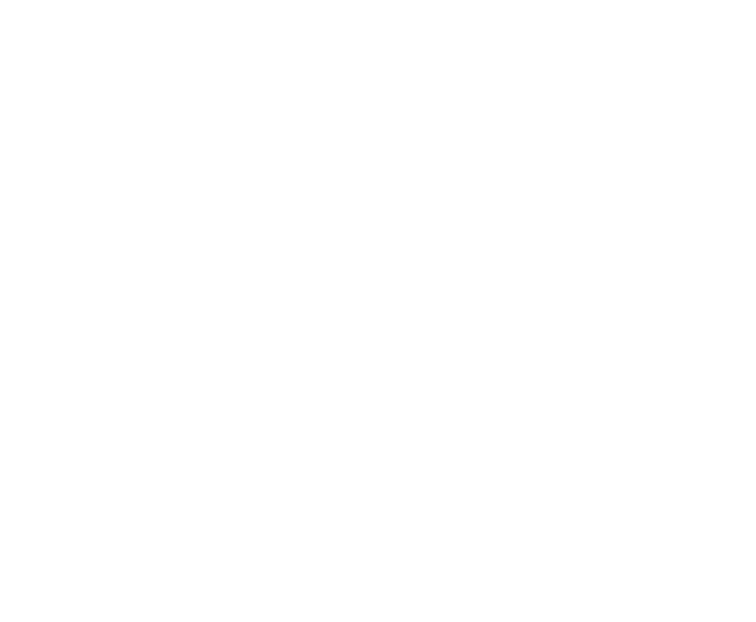
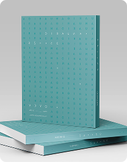
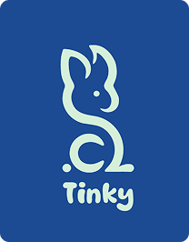
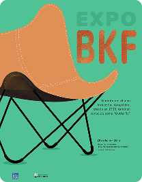

Fernanda Rodriguez
diseño y comunicación visual
pero vos me podes llamar
ferchu
***
Soy estudiante en la carrera de Diseño y Comunicación Visual. Estoy construyendo un conocimiento estratégico para resolver problemáticas de la comunicación visual en distintos contextos, capacitándome en la creación de identidad visual, diseño editorial y manejo fotográfico propio para cada proyecto, así tambien como el manejo de redes y la producción de las piezas para dicho sitio.
- detallista
- curiosa
- minimalista
- empatica
- orgánica
- poetica
- autentica
- observadora
- intuitiva
- receptiva
- visionaria
- flexible
- inclusiva
- colaborativa
- comunicativa
buenos aires _ argentina
Fernanda Rodriguez
14 . 06 . 2003
conoceme un poquito mejor
Mi objetivo profesional es formarme como una diseñadora capaz de transformar información en experiencias visuales claras y memorables, aportando soluciones creativas y funcionales en ámbitos editoriales, institucionales y culturales. Soy capaz de gestionar proyectos, mejorar procesos y optimizar recursos para maximizar la eficiencia y productividad. Poseo un enfoque proactivo, orientado a resultados, con capacidad de adaptación y acostumbrada a trabajar en entornos dinámicos y colaborativos. Me interesa explorar nuevas ideas, desarrollar propuestas innovadoras y enriquecer cada proyecto mediante la creatividad y el pensamiento crítico. Sostengo que el diseño es una forma de resolver problemas y transmitir sensaciones, una oportunidad para dejar una huella y generar un impacto significativo nuestra sociedad, guiando una comunicación acertiva.
formación académica
Instituto Martha Salotti
bachiller en comunicación
2014 - 2020
Universidad Nacional de Lanús
licenciatura en diseño y comunicación visual
2021 - HOY (75.68 %)
*
se puede ser estructurado y a la vez, dejar tu marca en el proceso"
¡podes ver mis proyectos!
Te invito a que pases a recorrer mis proyectos y conozcas mi estilo.
ir a porfolio



habilidades


aptitudes
Me logro destacar por la creatividad aplicada, la sensibilidad estética y la capacidad de análisis estratégico, integrando ideas y conceptos para poder desarrollar propuestas visuales con identidad y sentido. Por otro lado tengo predisposición para incorporar nuevos saberes, aprender de cada una de las experiencia y adaptarme a diferentes desafíos, también disfruto del trabajo en equipo, el intercambio de ideas y la construcción colectiva, aportando una mirada crítica y soluciones visuales claras, funcionales y coherentes con los objetivos de cada proyecto.